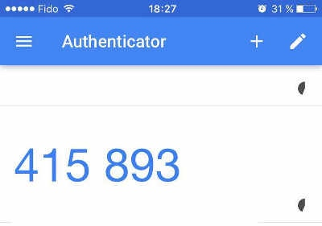

一般情况下，网站登录都使用账号密码的方式登录，这是最常见的认证方法，但是不安全，容易泄露和冒充。
双因素认证概念：
一般来说，三种不同类型的证据，可以证明一个人的身份。
- 秘密信息：只有该用户知道、其他人不知道的某种信息，比如密码
- 个人物品：该用户的私人物品，比如身份证、钥匙、手机号
- 生物特征：该用户的遗传特征，比如指纹、相貌、虹膜等
这些证据就称为三种”因素“。因素越多，证明力就越强，身份就越可靠。
双因素认证就是指，通过认证同事需要两个因素的证据。
银行卡取钱就是最常见的双因素认证。用户必须同时提供银行卡和密码，才能取到现金。
双因素认证方案
常用的双因素组合是密码 + 某种个人物品，比如网上银行的 U 盾。用户插上 U 盾，再输入密码，才能登录网上银行。
但是，用户不可能随时携带 U 盾，手机才是最好的替代品。密码 + 手机就成了最佳的双因素认证方案。
国内的很多网站要求，用户输入密码时，还要提供短消息发送的验证码，以证明用户确实拥有该手机。
但是，短消息是不安全的，容易被拦截和伪造，SIM 卡也可以克隆。已经有案例，先伪造身份证，再申请一模一样的手机号码，把钱转走。
因此，安全的双因素认证不是密码 + 短消息，而是下面要介绍的 TOTP。
TOTP的概念
TOTP 的全称是"基于时间的一次性密码"（Time-based One-time Password）。它是公认的可靠解决方案，已经写入国际标准 RFC6238。
它的步骤如下。
第一步，用户开启双因素认证后，服务器生成一个密钥。
第二步：服务器提示用户扫描二维码（或者使用其他方式），把密钥保存到用户的手机。也就是说，服务器和用户的手机，现在都有了同一把密钥。

注意，密钥必须跟手机绑定。一旦用户更换手机，就必须生成全新的密钥。
第三步，用户登录时，手机客户端使用这个密钥和当前时间戳，生成一个哈希，有效期默认为30秒。用户在有效期内，把这个哈希提交给服务器。

第四步，服务器也使用密钥和当前时间戳，生成一个哈希，跟用户提交的哈希比对。只要两者不一致，就拒绝登录。
TOTP算法
仔细看上面的步骤，你可能会有一个问题：手机客户端和服务器，如何保证30秒期间都得到同一个哈希呢？
答案就是下面的公式。
TC = floor((unixtime(now) − unixtime(T0)) / TS)
上面的公式中，TC 表示一个时间计数器，unixtime(now)是当前 Unix 时间戳，unixtime(T0)是约定的起始时间点的时间戳，默认是0，也就是1970年1月1日。TS 则是哈希有效期的时间长度，默认是30秒。因此，上面的公式就变成下面的形式。
TC = floor(unixtime(now) / 30)
所以，只要在 30 秒以内，TC 的值都是一样的。前提是服务器和手机的时间必须同步。
接下来，就可以算出哈希了。
TOTP = HASH(SecretKey, TC)
上面代码中，HASH就是约定的哈希函数，默认是 SHA-1。
TOTP 有硬件生成器和软件生成器之分，都是采用上面的算法。
总结
双因素认证的优点在于，比单纯的密码登录安全得多。就算密码泄露，只要手机还在，账户就是安全的。各种密码破解方法，都对双因素认证无效。
缺点在于，登录多了一步，费时且麻烦，用户会感到不耐烦。而且，它也不意味着账户的绝对安全，入侵者依然可以通过盗取 cookie 或 token，劫持整个对话（session）。
双因素认证还有一个最大的问题，那就是帐户的恢复。
一旦忘记密码或者遗失手机，想要恢复登录，势必就要绕过双因素认证，这就形成了一个安全漏洞。除非准备两套双因素认证，一套用来登录，另一套用来恢复账户。
本文由 Sajor
创作，采用 知识共享署名4.0 国际许可协议进行许可
本站文章除注明转载/出处外，均为本站原创或翻译，转载前请务必署名
最后编辑时间为: 2020-03-21T00:37:46+08:00